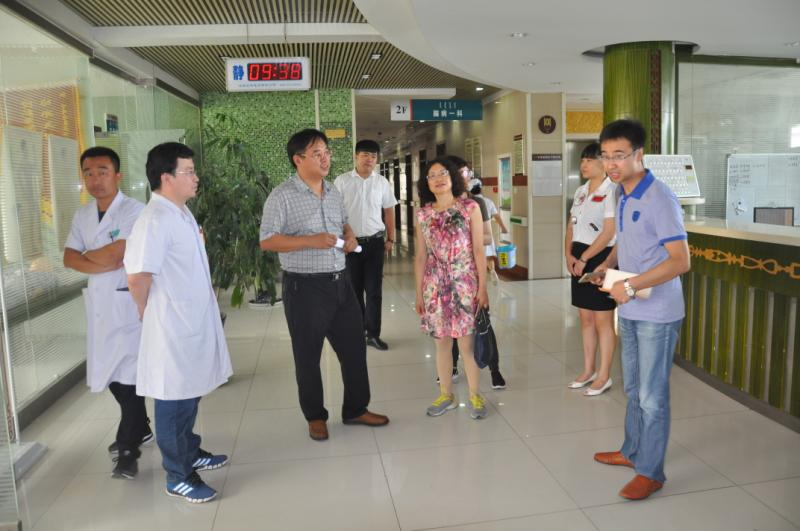
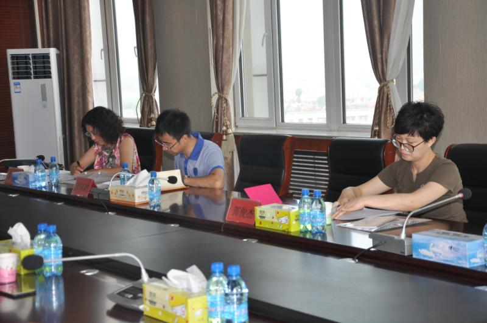
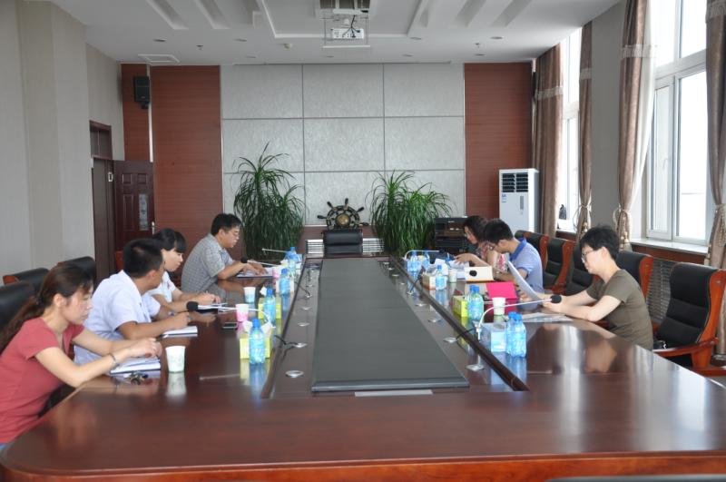

7月19日上午，农工党赤峰市委调研组一行3人，在隗春华副主委的带领下，来到蒙医中医医院针对蒙中医院发展遇到的瓶颈、医院现在存在的问题以及需要解决的问题进行了实地调研。为《关于推进自治区重点卫生项目和旗县蒙中医院建设》课题以及《我市分级诊疗工作存在的问题及建议》的课题项目收集资料。



调研组首先参观了医院针灸推拿科、院士工作站、脑病中心等科室，随后在小会议室进行了座谈，蒙医中医医院院张黎明副院长将医院发展遇到的困难，存在的问题，相关意见及建议向调研组做了汇报。与调研组专家就医院的医养结合、人才储备与培养、中医特色优势的发挥进行了广泛交流与探讨。人力资源科、科教科、党办科室主任陪同座谈。隗春华副主委对蒙医中医医院的蒙中医发展给与了充分的肯定，表示会将了解到的情况与收集到的意见和建议整理成报告，完成好相关课题，向市委做出如实汇报。